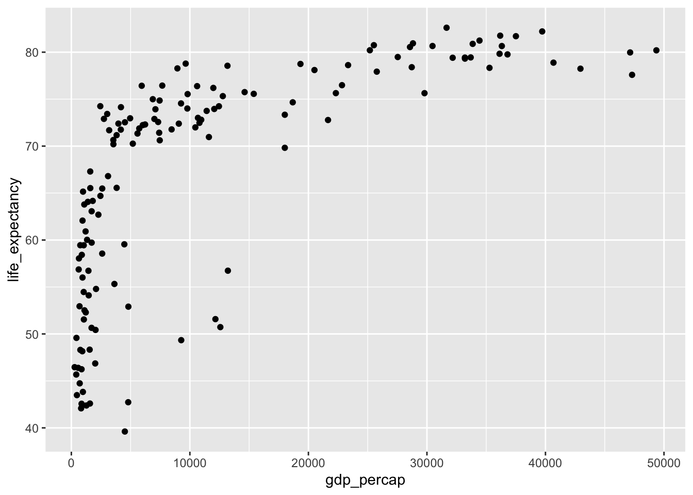
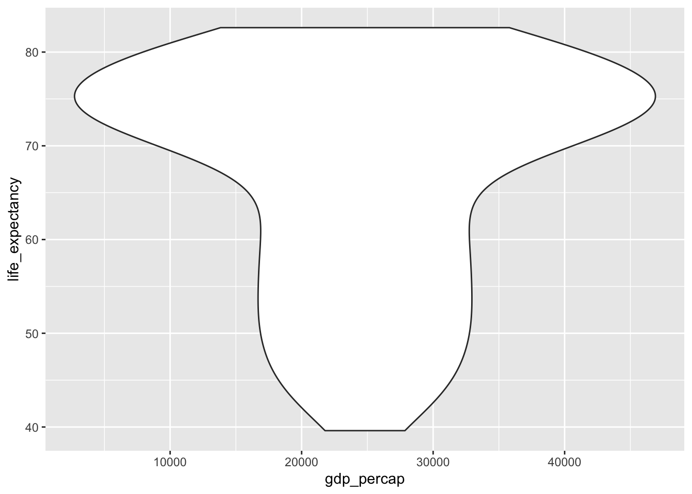
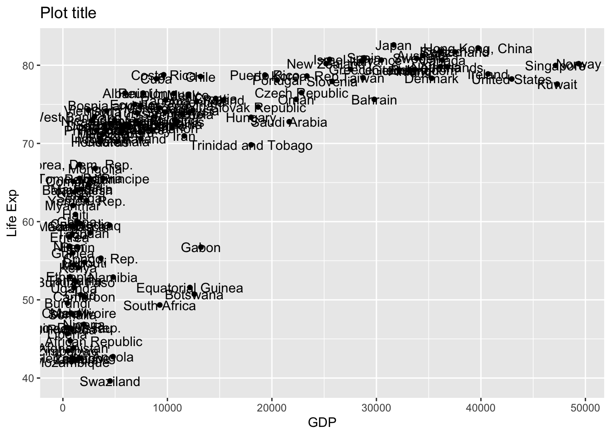
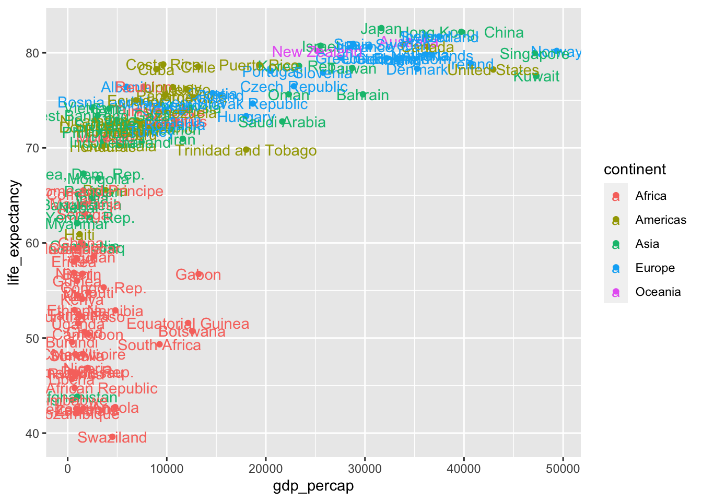
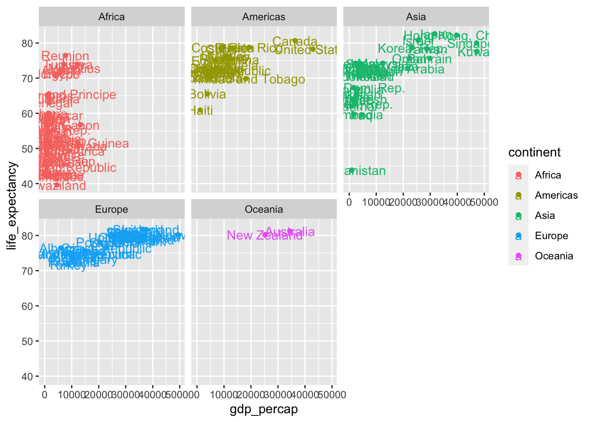

Chapter 3 Descriptive statistics with Tidyverse
3.1 Answers to Exercise Questions
3.1.1 Exercise 1
Today is Monday. What day of the week will it be 9, 54, 306, and 8999 days from now?
Note: Create a character vector containing the days of the week and repeat this vector 9000 times. Then, use indexing to find the desired day. Hint: Write the days of the week in the character vector starting from Tuesday.
days <- c("Tuesday", "Wednesday", "Thursday", "Friday", "Saturday", "Sunday", "Monday")
# you complete...
days_rep <- rep(days,9000)
days_rep[9]## [1] "Wednesday"## [1] "Saturday"## [1] "Saturday"## [1] "Friday"## [1] "Wednesday" "Saturday" "Saturday" "Friday"3.1.2 Exercise 2
Create a vector containing the numbers 1 to 100. Then, find the sum of the numbers that are divisible by 3 or 5.
Tip: Use the %% operator to find the remainder of a division.
# answer:
numbers <- 1:100
# find numbers that are divisible by 3:
numbers_3_5 <- numbers[numbers %% 3 == 0 | numbers %% 5 == 0]
sum(numbers_3_5)## [1] 24183.2 Practice questions for next week
Q1: Create a vector containing 50 random numbers with a normal
(Gaussian) distribution, mean 20 and standard deviation 2. You can do
this with the rnorm() function. Then assigns the numbers to a variable
and use that variable as an argument to the sample() function to
randomly select 10 samples from that vector. Run ?rnorm() ?sample()
to see how the functions work and what arguments they take.
## [1] 25 15 20 21 20 18 17 19 20 23Q2: Download and load “LearnBayes” package and take a look at the first few columns of the data set called “studentdata”.
Answer the following questions:
3.1. Remove rows that include NA observations.
## [1] 657 11## [1] 118## [1] 559 11## [1] 03.2. Get the number of female students.
## [1] 364## [1] 364## [1] 364## [1] 65.116283.3. Number of students who are taller than 180 cm (tip: the height is given in inches. please first turn them to cm by multiplying the observations with 2.54)
# You can use dplyr's mutate() function to change values in a dataset
library(dplyr)
df <- mutate(df, Height = Height * 2.54)
nrow(filter(df, Height > 180))## [1] 1153.4. Plot the relationship between height and sex in a line graph.

3.3 Data Manipulation: In-class practice
Now, let’s practice a bit more. Follow these steps:
We will now work with COVID-19 dataset. Let’s import it to our R session.
We can use dplyr’s read_csv() package to import a spreadsheet in .csv
format.
Source: https://github.com/sadettindemirel/Covid19-Turkey
When working with data, it’s important to create a workspace folder that contains both your data and R script. You can either download the .csv file and import it to R this way. Make sure that you set your working directory to the correct folder by going to Session -> Set Working Directory -> To Source File Location.
## # A tibble: 6 × 12
## tarih gunluk_test gunluk_vaka gunluk_olum gunluk_iyilesen toplam_test toplam_vaka
## <date> <dbl> <dbl> <dbl> <dbl> <dbl> <dbl>
## 1 2020-03-11 0 1 0 0 0 1
## 2 2020-03-12 0 0 0 0 0 1
## 3 2020-03-13 0 4 0 0 0 5
## 4 2020-03-14 0 1 0 0 0 6
## 5 2020-03-15 0 12 1 0 0 18
## 6 2020-03-16 0 29 0 0 0 47
## # … with 5 more variables: toplam_olum <dbl>, toplam_iyilesen <dbl>,
## # yogun_bakim_hasta <dbl>, toplam_intube <dbl>, agir_hasta <dbl>- Create a histogram (of daily death toll) and time-series plot (x:
time, y: daily death toll). You can use hist() and
boxplot()functions respectively to do that. Add label names.
- How many cases of COVID were detected and how many people died on July 20, 2020?
- Can you show the total number of COVID deaths and patients in intensive care between 2020-03-11 and 2020-07-20 in the timeline graph? Tip: You can use indexing to filter the dates and save them as a new data frame.
3.4 Data Manipulation with Tidyverse
So far, we have examined data frames using Base R, that is, the functions and operators native to R. However, today most data scientists using R do not process data with these, but with the more modern “Tidyverse” packages.
These packages make organizing data much easier and more practical (Wickham, 2017).
Let’s look at some important packages within Tidyverse:
- tibble:
as.tibble() - readr:
read_csv() - dplyr:
subset(), select(), filter(), summarize()and more… - magrittr:
%>%operator - ggplot2:
ggplot()
3.4.1 Tibble
Tibble is essentially a more modern version of data frames in R. Here’s
where Tibbles are superior to data frames: There is no need to use the
head() function. It automatically shows us the first 10 rows. There is
no need to use nrow() and ncol(). This information is included in
the table. tells us the type of vectors in each column (character,
integer, etc.)
## # A tibble: 6 × 14
## name height mass hair_color skin_color eye_color birth_year sex gender homeworld
## <chr> <int> <dbl> <chr> <chr> <chr> <dbl> <chr> <chr> <chr>
## 1 Luke Sk… 172 77 blond fair blue 19 male mascu… Tatooine
## 2 C-3PO 167 75 <NA> gold yellow 112 none mascu… Tatooine
## 3 R2-D2 96 32 <NA> white, bl… red 33 none mascu… Naboo
## 4 Darth V… 202 136 none white yellow 41.9 male mascu… Tatooine
## 5 Leia Or… 150 49 brown light brown 19 fema… femin… Alderaan
## 6 Owen La… 178 120 brown, gr… light blue 52 male mascu… Tatooine
## # … with 4 more variables: species <chr>, films <list>, vehicles <list>,
## # starships <list>3.4.2 Data manipulation with dplyr
dplyr is the most practical package for editing data frames or tibbles.
Let’s see what we can do with the functions included in it. For this we
will use a dataset from a package called gapminder:
| country | continent | year | lifeExp | pop | gdpPercap |
|---|---|---|---|---|---|
| Afghanistan | Asia | 1952 | 28.801 | 8425333 | 779.4453 |
| Afghanistan | Asia | 1957 | 30.332 | 9240934 | 820.8530 |
| Afghanistan | Asia | 1962 | 31.997 | 10267083 | 853.1007 |
| Afghanistan | Asia | 1967 | 34.020 | 11537966 | 836.1971 |
| Afghanistan | Asia | 1972 | 36.088 | 13079460 | 739.9811 |
| Afghanistan | Asia | 1977 | 38.438 | 14880372 | 786.1134 |
Let’s load the data:
3.4.2.1 filter() function
We can easily filter the data we want by using this function:
filter(df,country == "Turkey")
filter(df, year > 2002)
filter(df, year > 2002 & country == "Germany")How can you filter for multiple countries? Any guesses?
3.4.2.3 rename() function:
We can change the names of the columns we want with this. If we want this to be saved, we need to overwrite the variable:
3.4.2.4 mutate() function:
We can make changes to a tibble with the mutate() function.
For example, let’s create a new column and write the population there as one per million:
## # A tibble: 6 × 7
## country continent year life_expectancy pop gdp_percap pop_million
## <fct> <fct> <int> <dbl> <int> <dbl> <dbl>
## 1 Afghanistan Asia 1952 28.8 8425333 779. 8.43
## 2 Afghanistan Asia 1957 30.3 9240934 821. 9.24
## 3 Afghanistan Asia 1962 32.0 10267083 853. 10.3
## 4 Afghanistan Asia 1967 34.0 11537966 836. 11.5
## 5 Afghanistan Asia 1972 36.1 13079460 740. 13.1
## 6 Afghanistan Asia 1977 38.4 14880372 786. 14.93.4.3 Pipe with the magrittr package
The pipe operator is represented by the symbol %>%. This operator takes the variable on its left and places it as the first argument of the function on its right. This operator will be preferred instead of using nested and long functions. This saves us from hard-to-read and nested functions and helps us follow a linear order:
3.4.5 Scatterplots
You can use geom_point().
library(ggplot2)
df_mutated %>% filter(year == 2007) %>%
ggplot(aes(x=gdp_percap, y=life_expectancy)) +
geom_point() 
Or you can try using geom_jitter() or geom_violin()
df_mutated %>% filter(year == 2007) %>%
ggplot(aes(x=gdp_percap, y=life_expectancy)) +
geom_violin() 
You can use text labels.
p1 <- df_mutated %>% filter(year == 2007) %>%
ggplot(aes(x=gdp_percap, y=life_expectancy, label = country)) +
geom_point() +
geom_text()
p1 + ggtitle("Plot title") + xlab("GDP") + ylab("Life Exp")
Using the color option:
df_mutated %>% filter(year == 2007) %>%
ggplot(aes(x=gdp_percap, y=life_expectancy, label = country, color = continent)) +
geom_point() +
geom_text()
Add new facets:
df_mutated %>% filter(year == 2007) %>%
ggplot(aes(x=gdp_percap, y=life_expectancy, label = country, color = continent)) +
geom_point() +
geom_text() +
facet_wrap(~continent)
3.5 In-class Exercises
- What years of information are included in the Gapminder data? Tip:
You can find this out with the
unique()command.
- What are the mean and median of life years in 1962 and 2002? Tip:
You can do this with the
filter()andselect()functions.
- Can you create a scatterplot of income (x-axis) and years of life
expectancy (y-axis) for the European continent in 1960, 1980 and
2000 using
ggplot()andfacet_wrap()? Country names must appear as text. Also color by continent. Tip: after filtering the data by these years you will need to callfacet_wrap(~year).
- Can you create a line plot and show Turkey’s population growth? Can
you name the plot and axes? Tip: you will need to use the
geom_line()function to create the line chart.